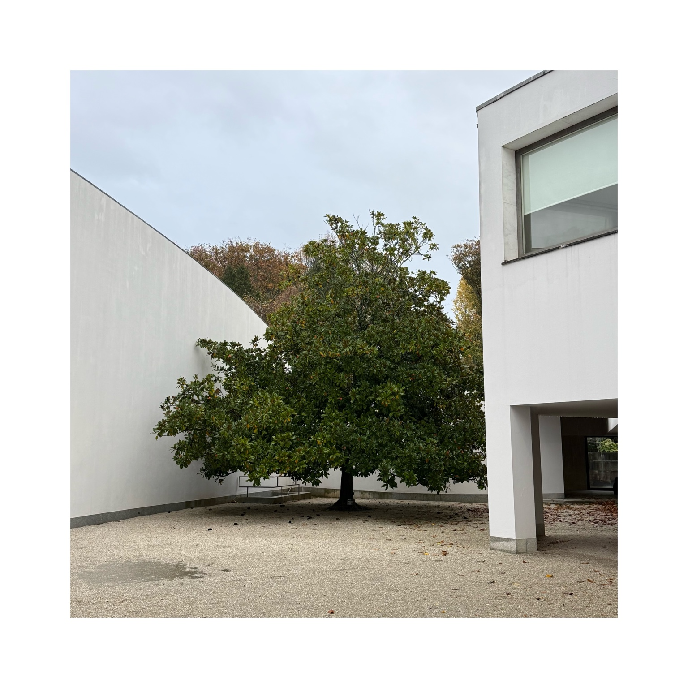

Architecture · Urbanism · Observation
Space, people,
and possibility.
Architecture begins with everyday life. Through careful observation of people and place, I seek to create spaces that support daily life, invite connection, and respond to their surroundings.
Explore selected work
Explore selected work
SELECTED ACADEMIC DESIGNSPORTFOLIO / 2026
01 / Selected work
Spaces for everyday life.
02 Selected projects / 2021–2024
02 / About me
Looking closer.
Thinking wider.

For me, architecture is both an answer and the beginning of a question. It starts with the careful assembly of materials and grows through the relationship between people and their stories. My work seeks to safeguard the dignity of everyday life.
Through floating public spaces and age-friendly community design, I explore how architecture can connect daily life with its environment. My portfolio combines spatial planning, modular thinking, and attention to the experience of moving through a building.
EDUCATIONSoutheast University
Master’s in Architecture · In progress
Master’s in Architecture · In progress
EXCHANGEUPM · ETSAM, Madrid
2025.04–08Link-Arc Architects · Shenzhen
On-site internship · design support & documentation
On-site internship · design support & documentation
AutoCADRhinoGrasshopperV-RayAdobe SuiteModel making
03 / Journal
Notes from the field.
04 / Get in touch
Let's start a conversation.
Architecture, urban research, and new perspectives.